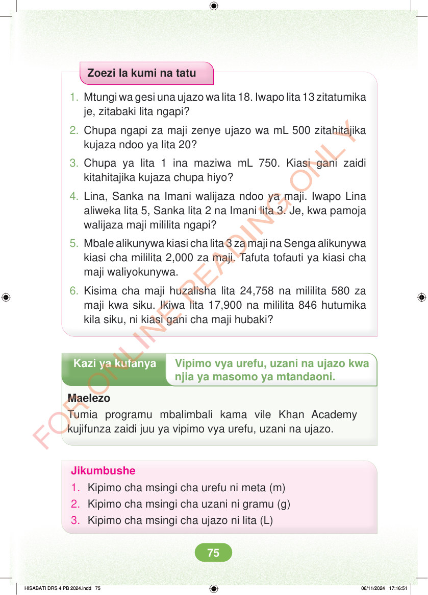

<!DOCTYPE html>
<html lang="sw-TZ"><head><meta charset="utf-8"><meta name="viewport" content="width=device-width,initial-scale=1">
<title>Hisabati: Kitabu cha Mwanafunzi Darasa la Nne</title>
<meta name="title-id" content="pg081_sec001"><meta name="page-section-id" content="84">
<link href="./content/tailwind_output.css" rel="stylesheet"><link href="./assets/libs/fontawesome/css/all.min.css" rel="stylesheet"><link href="./assets/fonts.css" rel="stylesheet">
<style>body{margin:0;background:#eef1ed}main{width:100%;display:flex;justify-content:center;padding:1rem 1rem 5rem;box-sizing:border-box}#content{width:100%;display:flex;justify-content:center}.pdf-page{position:relative;width:min(calc(100vw - 2rem),56rem);aspect-ratio:540.8980102539062/750.6610107421875;background:white;box-shadow:0 4px 24px #0002;overflow:hidden}.pdf-page img{position:absolute;inset:0;width:100%;height:100%;object-fit:fill}</style>
</head><body><main><h1 class="sr-only" id="page-heading">Ukurasa wa 81</h1><div id="content" class="opacity-0"><section role="article" data-section-type="pdf_accessible_page" data-section-id="pg081_sec001" aria-labelledby="page-heading" class="pdf-page"><p class="sr-only" data-id="pg081_gp001_tx001">Zoezi la kumi na tatu 1. Mtungi wa gesi una ujazo wa lita 18. Iwapo lita 13 zitatumika je, zitabaki lita ngapi? 2. Chupa ngapi za maji zenye ujazo wa mL 500 zitahitajika kujaza ndoo ya lita 20? 3. Chupa ya lita 1 ina maziwa mL 750. Kiasi gani zaidi kitahitajika kujaza chupa hiyo? 4. Lina, Sanka na Imani walijaza ndoo ya maji. Iwapo Lina aliweka lita 5, Sanka lita 2 na Imani lita 3. Je, kwa pamoja walijaza maji mililita ngapi? 5. Mbale alikunywa kiasi cha lita 3 za maji na Senga alikunywa kiasi cha mililita 2,000 za maji. Tafuta tofauti ya kiasi cha maji waliyokunywa. 6. Kisima cha maji huzalisha lita 24,758 na mililita 580 za maji kwa siku. Ikiwa lita 17,900 na mililita 846 hutumika kila siku, ni kiasi gani cha maji hubaki? Kazi ya kufanya Vipimo vya urefu, uzani na ujazo kwa njia ya masomo ya mtandaoni. Maelezo Tumia programu mbalimbali kama vile Khan Academy kujifunza zaidi juu ya vipimo vya urefu, uzani na ujazo. Jikumbushe 1. Kipimo cha msingi cha urefu ni meta (m) 2. Kipimo cha msingi cha uzani ni gramu (g) 3. Kipimo cha msingi cha ujazo ni lita (L) HISABATI DRS 4 PB 2024.indd 75 HISABATI DRS 4 PB 2024.indd 75 06/11/2024 17:16:51 06/11/2024 17:16:51</p></section></div></main><div class="relative z-50" id="interface-container"></div><div class="relative z-50" id="nav-container"></div><script src="./assets/offline-preloader.js"></script><script src="./assets/scorm.js"></script><script src="./assets/base.bundle.local.js"></script></body></html>